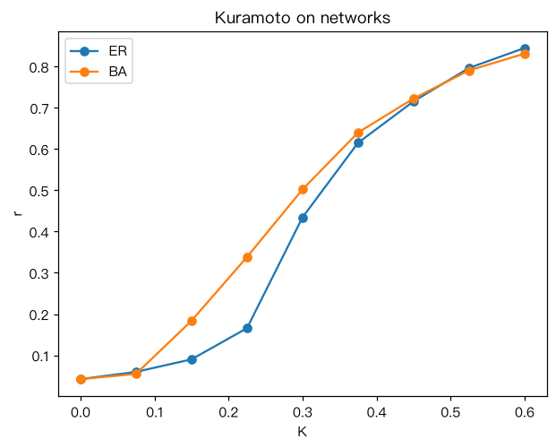

Example02 / 11
网络结构如何影响同步起点
在 ER 与 BA 网络（N=300，平均度相同）上运行网络 Kuramoto 模型：
dtheta_i/dt = omega_i + K * sum_j A_ij sin(theta_j - theta_i)
固有频率取标准高斯分布，K_0 = 2/(pig(0)) = 2sqrt(2pi)/pi。
先用异质平均场 K_c = K_0
Output输出图

Output文字输出
ER K_c 估计 = 0.233 BA K_c 估计 = 0.138 ER r(K): [0.04, 0.06, 0.09, 0.17, 0.43, 0.62, 0.72, 0.8, 0.85] BA r(K): [0.04, 0.05, 0.18, 0.34, 0.5, 0.64, 0.72, 0.79, 0.83]
Code代码
# 在 ER 与 BA 网络（N=300，平均度相同）上运行网络 Kuramoto 模型：
# dtheta_i/dt = omega_i + K * sum_j A_ij sin(theta_j - theta_i)
# 固有频率取标准高斯分布，K_0 = 2/(pi*g(0)) = 2*sqrt(2*pi)/pi。
# 先用异质平均场 K_c = K_0 * <k>/<k^2> 估计两种网络的临界耦合，再画模拟的 r(K) 曲线。
# 解读：BA 网络的 <k^2> 更大，K_c 更小，r 更早开始上升。
import numpy as np
import networkx as nx
import scipy.sparse as sp
import matplotlib.pyplot as plt
N = 300
G_ba = nx.barabasi_albert_graph(N, 3, seed=2)
G_er = nx.gnm_random_graph(N, G_ba.number_of_edges(), seed=2)
omega = np.random.default_rng(5).standard_normal(N)
K0 = 2 * np.sqrt(2 * np.pi) / np.pi
def net_kuramoto(G, K, omega, T=40.0, dt=0.05, seed=0):
A = sp.csr_matrix(nx.to_scipy_sparse_array(G, nodelist=range(G.number_of_nodes())))
theta = np.random.default_rng(seed).uniform(0, 2 * np.pi, omega.size)
rs = []
for _ in range(int(T / dt)):
s, c = np.sin(theta), np.cos(theta)
coupling = c * (A @ s) - s * (A @ c) # = sum_j A_ij sin(theta_j - theta_i)
theta = theta + dt * (omega + K * coupling)
rs.append(abs(np.exp(1j * theta).mean()))
return np.mean(rs[len(rs) // 2:])
def Kc_hmf(G):
k = np.array([d for _, d in G.degree()], dtype=float)
return K0 * k.mean() / (k**2).mean()
for name, G in [("ER", G_er), ("BA", G_ba)]:
print(name, "K_c 估计 =", round(Kc_hmf(G), 3))
Ks = np.linspace(0, 0.6, 9)
for name, G in [("ER", G_er), ("BA", G_ba)]:
r = [net_kuramoto(G, K, omega) for K in Ks]
print(name, "r(K):", np.round(r, 2).tolist())
plt.plot(Ks, r, "o-", label=name)
plt.xlabel("K"); plt.ylabel("r"); plt.legend(); plt.title("Kuramoto on networks")
plt.show()Run在浏览器中运行
首次加载 Python 环境约需 20–40 秒；可以修改参数后重新运行。